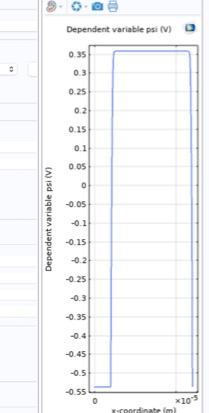
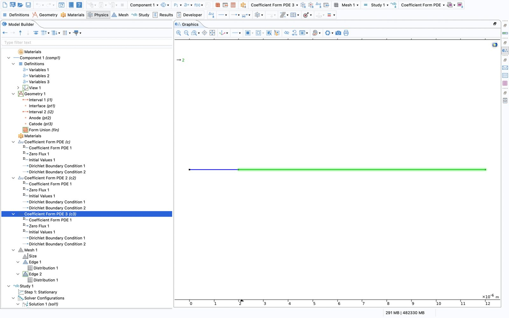

errors log
#1model wizard
Dependent variable came out as psi3, units Dimensionless and source m^-2. Not an error COMSOL complains about, but with wrong units you lose the unit check on every expression.

fix: rename the variable, set units with the pencil icon: V for all three, source C/m^3 (psi) and 1/s (phin, phip).
Also had a Component 2 with its own geometry and mesh, added by accident. Deleted.
#2undefined variables
Undefined variable. - Variable: comp1.Vt - Geometry: geom1 - Domain: 2 Failed to evaluate expression. - Expression: comp1.Vt*asinh(0.5*comp1.Ndop/ni)
cause: Variables 3 had its selection on point 2 (the junction). A variable selected on a point only exists on that point.
fix: Variables 3 → Entire model. Also moved Vt to Parameters.
Undefined variable. - Variable: ni - Domain: 1
Undefined variable. - Variable: eps_s Failed to evaluate variable. - Variable: comp1.c.c - Defined as: eps_s Failed to evaluate variable. - Variable: comp1.c.Ga ...
cause: parameters just not there.
fix: add them. Should have checked the whole list once instead of fixing them one per run.
rule: only read the first line. the rest is the chain of where it's used (here: c of the Poisson interface → flux → Jacobian). it's either not defined, or defined in a node with the wrong selection.
#3mesh
Two Edge nodes, no idea how to make them fine at the junction. Edge 2 red because it had no selection.
fix: Edge only says where. Need a Distribution child under each Edge to say how (reverse on domain 1). Then: no "geometric sequence" in my Distribution options → used exponential.

#4potential drops back at the cathode

ψ correct in the middle (−0.54 → +0.36 V, so Vbi was right), but falls back to −0.54 V at x = 12 µm. Looks like a second junction.
cause: cathode Dirichlet had the anode expression. (If two Dirichlet nodes select the same point, the lower one in the tree wins, so it can also be a selection problem.)
fix: point 3 → Vt*asinh(ND/(2*ni)). Checked phin/phip too.

#5c3 only on domain 2? (to check)

Clicking on Coefficient Form PDE 3 highlights only domain 2 (green). If the hole continuity equation isn't active on domain 1, step 1 doesn't care (only psi is solved), but step 2 would be wrong on the p+ side.
TODO: check Domain Selection of c, c2, c3 → should be all domains (1, 2)
#6?
next one goes here